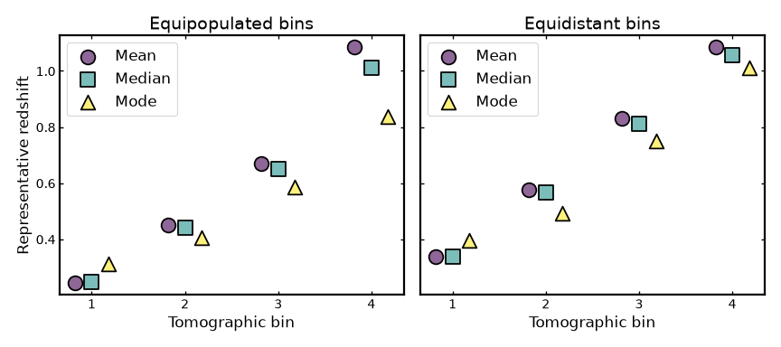
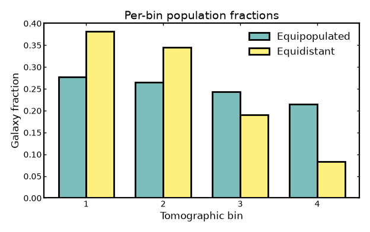
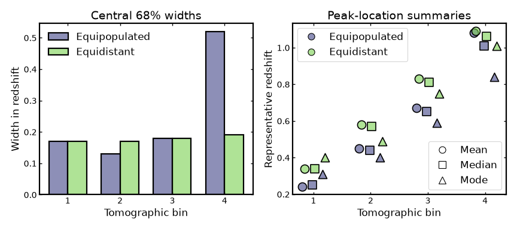
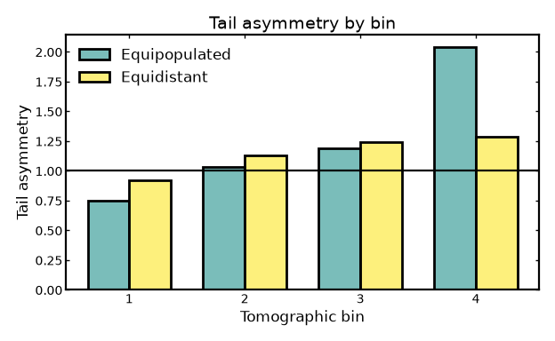
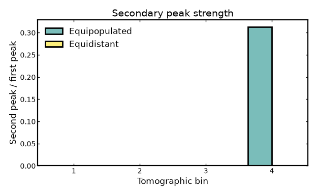
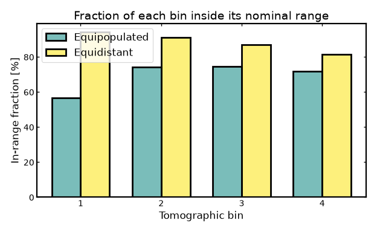
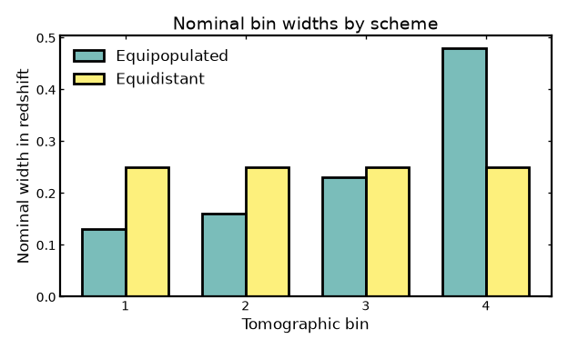

Bin summaries#
Bin summaries#
Once tomographic bins have been built, a good practice is to inspect their statistical properties before using them in a forecast or analysis.
Binny provides several summary statistics through
binny.NZTomography that describe both the shape of the bin
curves and the distribution of galaxies across bins. These
summaries help diagnose whether a tomographic binning scheme produces
well-separated, well-populated bins before the bins are used in a
forecast or cosmological analysis.
This page illustrates these summaries for a simple four-bin photometric example and compares two common binning schemes:
equipopulated binning, where each bin contains a similar fraction of the galaxy sample,
equidistant binning, where the redshift interval is divided into bins of similar width.
The examples below focus on two families of summaries:
shape statistics, such as bin centers, widths, quantiles, and peaks,
population statistics, such as the fraction of galaxies per bin.
All plotting examples below are executable via .. plot::.
To keep the page compact, the plotting code is hidden by default.
Click the Source code button above a plot to open the corresponding code
in a new tab.
Building a representative photo-z example#
We begin with a smooth parent redshift distribution and construct two photometric tomographic realizations of the same sample: one using equipopulated bins and one using equidistant bins.
Both cases use the same photo-z uncertainty model, so the comparison isolates the effect of the binning strategy itself.
(Source code, png, hires.png, pdf)
{kind=link}
{kind=link}

Accessing shape and population summaries#
Shape and population summaries are typically inspected together when evaluating a tomographic binning strategy.
Shape statistics describe the internal structure of each bin curve, including representative redshift centers, widths, quantiles, and peak locations. These quantities characterize how each bin samples the underlying galaxy population.
Population statistics instead describe how galaxies are distributed across bins, for example the fraction of the total sample assigned to each bin or the corresponding galaxy number densities.
Together these summaries provide a compact diagnostic of whether the chosen binning scheme produces balanced and well-behaved tomographic bins.
import numpy as np
from binny import NZTomography
z = np.linspace(0.0, 2.0, 500)
nz = NZTomography.nz_model(
"smail",
z,
z0=0.2,
alpha=2.0,
beta=1.0,
normalize=True,
)
common_uncertainties = {
"scatter_scale": [0.010, 0.012, 0.015, 0.018],
"mean_offset": 0.0,
"outlier_frac": [0.02, 0.05, 0.15, 0.26],
"outlier_scatter_scale": [0.008, 0.010, 0.012, 0.015],
"outlier_mean_offset": [0.35, 0.40, 0.45, 0.50],
}
equipopulated_spec = {
"kind": "photoz",
"bins": {"scheme": "equipopulated", "n_bins": 4},
"uncertainties": common_uncertainties,
"normalize_bins": True,
}
equidistant_spec = {
"kind": "photoz",
"bins": {"scheme": "equidistant", "n_bins": 4, "range": (0.2, 1.2)},
"uncertainties": common_uncertainties,
"normalize_bins": True,
}
tomo_equipopulated = NZTomography()
tomo_equipopulated.build_bins(
z=z,
nz=nz,
tomo_spec=equipopulated_spec,
include_tomo_metadata=True,
)
tomo_equidistant = NZTomography()
tomo_equidistant.build_bins(
z=z,
nz=nz,
tomo_spec=equidistant_spec,
include_tomo_metadata=True,
)
shape_equipopulated = tomo_equipopulated.shape_stats(
center_method="median",
decimal_places=3,
)
population_equipopulated = tomo_equipopulated.population_stats(
density_total=30.0,
decimal_places=3,
)
shape_equidistant = tomo_equidistant.shape_stats(
center_method="median",
decimal_places=3,
)
population_equidistant = tomo_equidistant.population_stats(
density_total=30.0,
decimal_places=3,
)
print("Equipopulated shape statistics")
print(shape_equipopulated)
print()
print("Equipopulated population statistics")
print(population_equipopulated)
print()
print("Equidistant shape statistics")
print(shape_equidistant)
print()
print("Equidistant population statistics")
print(population_equidistant)
Visualizing representative bin centers#
A compact way to compare the two binning schemes is to reduce each bin to a small set of representative redshift summaries, such as the mean, median, and mode.
Although these summaries do not capture the full bin shape, they provide a simple way to compare how different binning schemes place their bins across the redshift range of the parent sample and how sensitive the notion of a “bin center” is to the chosen definition. When the mean, median, and mode lie close together, the bin is usually fairly compact and only weakly skewed; when they differ more noticeably, the bin shape is typically more asymmetric or more affected by tails and outliers.
Representative bin centers also play an important role in many cosmological analyses. In weak lensing, galaxy clustering, and galaxy-galaxy lensing forecasts, several astrophysical systematics are often parameterized per tomographic bin, with the parameter values defined as functions of the bin center. Examples include intrinsic alignment amplitudes, galaxy bias, and magnification bias, which are commonly evaluated at a characteristic redshift associated with each bin.
For this reason, inspecting different definitions of bin centers can be useful when assessing how tomographic binning choices propagate into downstream modeling assumptions.
(Source code, png, hires.png, pdf)
{kind=link}
{kind=link}
{kind=link}

Comparing per-bin galaxy fractions#
Population fractions are especially useful when comparing different binning schemes. Equipopulated binning is designed to place a similar fraction of galaxies into each bin, whereas equidistant binning is instead controlled by redshift width.
For four bins, a perfectly balanced population split would correspond to
a fraction of 0.25 in each bin. In practice, the equipopulated
fractions may not be exactly identical, because photometric redshift
uncertainties scatter galaxies across bin boundaries and slightly modify
the final observed-bin populations.
Values closer to equal fractions generally indicate a more balanced use of the galaxy sample, which is often desirable for maintaining similar statistical weight across bins. Larger deviations from equal fractions are not necessarily problematic, but they show that some bins carry more galaxies than others and may therefore contribute differently to later tomographic analyses.
The bar chart below compares the resulting per-bin fractions.
(Source code, png, hires.png, pdf)
{kind=link}
{kind=link}
{kind=link}

Comparing widths and peak locations#
In addition to representative centers, it is often useful to compare the effective width and characteristic peak location of each tomographic bin.
The central 68% width provides a robust summary of the redshift spread within a bin. Unlike a simple standard deviation, it is directly tied to the inner percentile range of the distribution and is therefore easier to interpret for skewed or slightly non-Gaussian bin shapes. There is no single universal target value, since the preferred width depends on the survey, the science case, and the available redshift precision. Still, smaller values generally indicate tighter redshift localization, while larger values indicate broader bins, stronger photometric smearing, or more leakage across nominal bin boundaries.
The peak-location summaries describe where the bin is most strongly concentrated in redshift. Here we compare the mean, median, and mode for each bin. Looking at these together is useful because they respond differently to skewness, extended tails, and secondary structure. If these three summaries lie close together, the bin is usually fairly compact and symmetric. If they separate noticeably, that often indicates skewness, leakage, or outlier-driven distortions in the bin shape.
These quantities are useful in cosmological investigations because many downstream ingredients are attached to a characteristic bin redshift. Examples include intrinsic-alignment amplitudes, galaxy-bias parameters, magnification-bias terms, and other nuisance or astrophysical quantities that are commonly defined per tomographic bin. At the same time, the bin width controls how broadly the galaxy sample projects the underlying matter field along the line of sight. Inspecting both width and peak summaries therefore helps assess how binning choices may propagate into signal modeling, parameter interpretation, and the level of overlap between neighboring bins.
The figure below shows the central 68% widths as a histogram-style bar comparison and the corresponding mean, median, and mode values for each bin.
(Source code, png, hires.png, pdf)
{kind=link}
{kind=link}
{kind=link}

Tail asymmetry per bin#
Tail asymmetry compares the upper and lower spread around the median, using the 16th, 50th, and 84th percentiles.
A value of 1 corresponds to perfectly symmetric upper and lower tails around the median. Values above 1 indicate that the distribution extends further toward higher redshift than toward lower redshift, while values below 1 indicate the opposite.
Values close to 1 therefore suggest a fairly balanced bin shape, whereas larger departures from 1 indicate increasing skewness. This does not automatically mean that a bin is unusable, but strong asymmetries can signal leakage from neighboring bins, outlier contamination, or shape distortions introduced by the photo-z model.
(Source code, png, hires.png, pdf)
{kind=link}
{kind=link}
{kind=link}

Secondary peak strength#
Secondary peak strength measures how important the second-highest peak is relative to the primary peak in each bin curve.
A value of 0 means that no secondary peak is identified, so the bin appears effectively single-peaked. Larger values indicate stronger multimodality or more pronounced secondary structure, which can arise from photo-z outliers or leakage from neighboring bins.
A nonzero value does not necessarily indicate a pathological binning scheme. In many cases it simply shows that a subset of galaxies is being scattered far enough from the main concentration to form a distinct secondary bump. This can happen more strongly in some bins than in others, depending on the local bin width, the shape of the parent distribution, and the adopted uncertainty model.
For this reason, the diagnostic is best interpreted as a flag for possible multimodality or substructure rather than as a direct statement about the physical cause. Values near 0 usually indicate weak or absent secondary structure, whereas larger values suggest that the bin contains a more clearly separated subpopulation and may be more strongly affected by outliers or cross-bin leakage.
(Source code, png, hires.png, pdf)
{kind=link}
{kind=link}
{kind=link}

In-range fraction per bin#
The in-range fraction measures how much of the redshift distribution assigned to a tomographic bin remains inside that bin’s intended redshift interval.
In a cosmological context, this is a simple way to quantify how cleanly a bin isolates galaxies from the redshift range it is supposed to represent. A value of 1 would mean that the full bin distribution lies inside its nominal redshift boundaries, so the bin is perfectly localized with respect to that interval. Values close to 1 therefore indicate clean bin localization. Lower values indicate that a larger fraction of the bin distribution spills outside those boundaries because of photometric-redshift scatter, outliers, or leakage from neighboring bins.
This matters because tomographic analyses in weak lensing, galaxy clustering, and galaxy-galaxy lensing rely on each bin tracing a relatively well-defined slice of cosmic structure along the line of sight. If too much of a bin lies outside its nominal range, the interpretation of that bin becomes less clean and overlap between neighboring bins becomes more important.
(Source code, png, hires.png, pdf)
{kind=link}
{kind=link}
{kind=link}

Nominal bin widths#
Nominal bin widths describe the redshift span assigned to each tomographic bin by the binning scheme itself, before considering any additional broadening from photometric-redshift scatter or leakage.
In cosmological analyses, these widths determine how finely the galaxy sample is divided along the line of sight. There is no single preferred numerical value in isolation: narrower bins probe structure in thinner redshift slices and can preserve more radial information, while broader bins mix galaxies across a wider range of cosmic distances and therefore smooth over some of that information.
This is useful when comparing binning strategies because equipopulated and equidistant binning optimize different goals. Equipopulated binning adjusts the bin edges so that each bin contains a similar fraction of galaxies, which often leads to uneven redshift widths. Equidistant binning instead keeps the redshift intervals similar, but allows the galaxy counts per bin to vary. Looking at the nominal widths therefore helps clarify what each scheme is prioritizing and how that choice may affect later tomographic analyses in weak lensing, galaxy clustering, or galaxy-galaxy lensing.
(Source code, png, hires.png, pdf)
{kind=link}
{kind=link}
{kind=link}

Notes#
Shape statistics summarize the structure of the bin curves themselves and are safe to compute even when each bin is normalized.
Population statistics depend on tomography metadata and therefore require rebuilding with
include_tomo_metadata=True.Some summaries have a clear reference value: tail asymmetry is easiest to interpret relative to
1, in-range fraction relative to1, and secondary peak strength relative to0.Other summaries, such as widths or nominal bin spans, do not have a single universally optimal value and should be interpreted in the context of the binning strategy and science application.
Equipopulated and equidistant binning can produce noticeably different bin centers, widths, and population fractions, even when they are built from the same parent distribution and uncertainty model.
The summaries returned by
binny.NZTomographyare ordinary Python dictionaries, so the quantities shown here can also be saved or reused directly in later analysis steps.